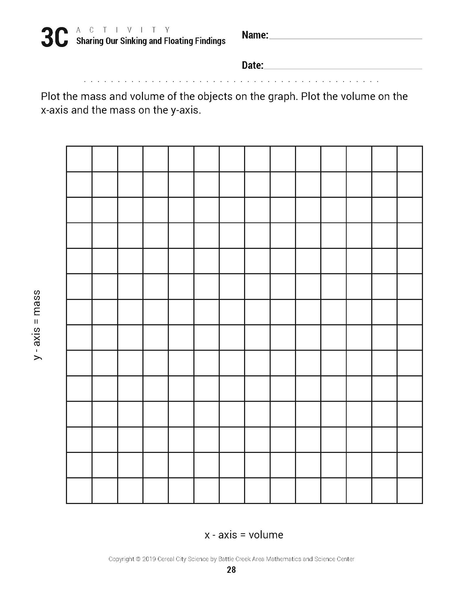
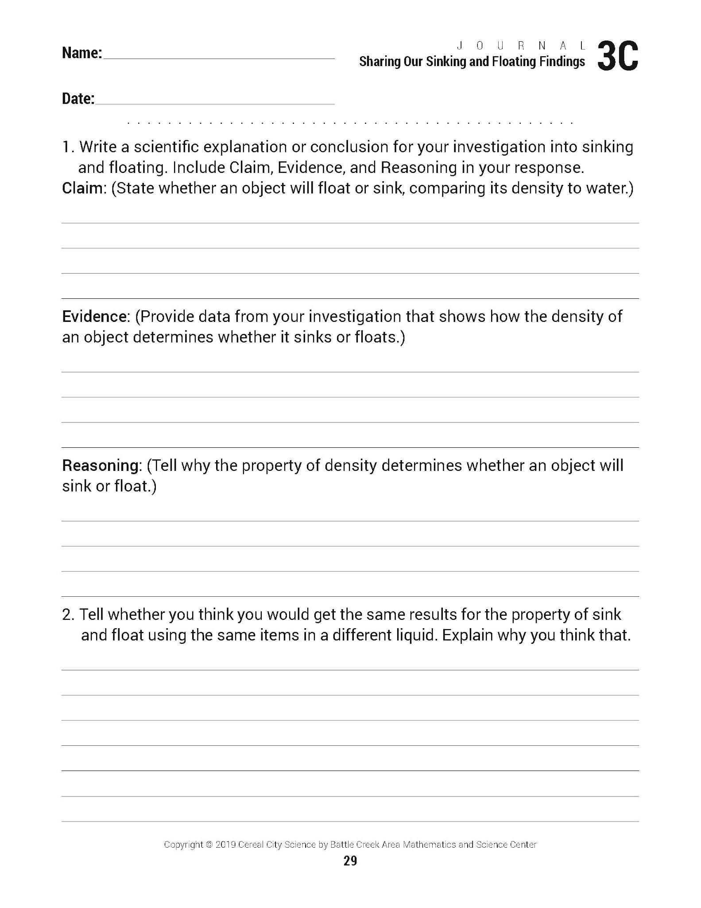

Plot the mass and volume of the objects on the graph. Plot the volume on the x-axis and the mass on the y-axis.
y-axis = mass
x-axis = volume
Student journal pages 28–29 • Select a page below to read its editable text.
Plot the mass and volume of the objects on the graph. Plot the volume on the x-axis and the mass on the y-axis.
This is the unmarked scanned page for checking original diagrams, exact wording, or layout. The editable HTML content is above.

1. Write a scientific explanation or conclusion for your investigation into sinking and floating. Include Claim, Evidence, and Reasoning in your response.
Claim: (State whether an object will float or sink, comparing its density to water.)
Evidence: (Provide data from your investigation that shows how the density of an object determines whether it sinks or floats.)
Reasoning: (Tell why the property of density determines whether an object will sink or float.)
2. Tell whether you think you would get the same results for the property of sink and float using the same items in a different liquid. Explain why you think that.
This is the unmarked scanned page for checking original diagrams, exact wording, or layout. The editable HTML content is above.
